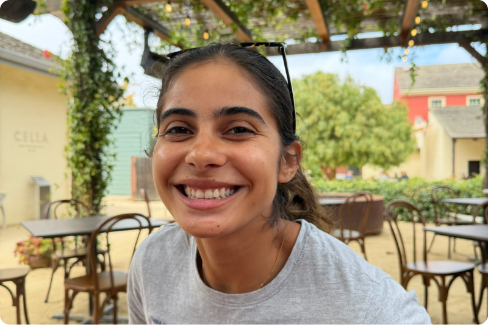

Value & Access @ Biogen | Commercial Lead @ Hydrogel Spinout (Imperial) prev. MSc @ LSE | BSc @ King's | Ada Health | EY

About me
I am German-Dominican, and still not sure what nationality to lead with. Does the first half you introduce yourself with mean you identify more with that nationality? Not sure... I grew up moving around A LOT. I've lived in 6 different countries, and grew up speaking English, German and Spanish. In other words, I consider myself to be a true cosmopolitan. Anyone that knows me will tell you that I am a social butterfly...I am always out and about meeting people. I am passionate about improving people's health and wellbeing, stemming from an early realisation of the dichotomy between German and Dominican healthcare systems. I am a deeply empathetic person and like to get shit done. I hold an MSc in Health Economics from LSE and a BSc in Philosophy, Politics and Economics from King's. I am a generalist at heart: I pick up new fields and distill information quickly, using this to work with investors, payers, and consumers to ultimately achieve breakthroughs in health. At university, I picked up long-jump, with little to no background in athletics. I competed at the British Universities Championships and continue to compete in local competitions. I think competitive sport is one of the best ways to learn how to accept feedback, regulate emotions and show up disciplined. In the same spirit, when I was 18, I signed with a modelling agency and have been modelling here and there ever since. It's a great way to push myself out of my comfort zone and I love surrounding myself with creatives. My dream is to build something of my own in health that actually reaches people. Some areas I am drawn to include: female health, IBS and bringing sports to underserved communities. In the meantime, I decided to build my own website as a personal project to prove (mostly to myself) that I can take an idea from thought to a finished thing.